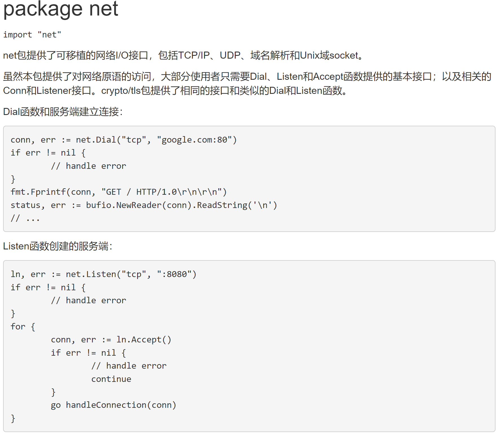

2 Socket - TCP 编程¶
Socket是BSD UNIX的进程通信机制，称作”套接字”，用于描述IP地址和端口，是一个通信链的句柄。
Socket可以理解为TCP/IP网络的API，它定义了许多函数或例程，程序员可以用它们来开发TCP/IP网络上的应用程序。电脑上运行的应用程序。
Socket是应用层与TCP/IP协议族通信的中间软件抽象层。
在设计模式中，Socket其实就是一个门面模式，它把复杂的TCP/IP协议族隐藏在Socket后面，对用户来说只需要调用Socket规定的相关函数，让Socket去组织符合指定的协议数据然后进行通信。
Socket 服务端和客户端的处理流程¶
服务端的处理流程：
- 监听端口
- 接受客户端的
TCP连接，建立客户端和服务端的连接 - 创建
goroutine，处理该连接的请求（通常客户端会通过连接发送请求包）
客户端的处理流程：
- 建立于服务端的连接
- 发送请求数据，接收服务端返回的结果数据
- 关闭连接

案例分析¶
编写一个服务器端程序，在8888端口监听，可以和多个客户端创建连接，连接成功后，客户端可以发送单行数据，服务端接收数据并显示在终端上，先使用telnet来测试，然后编写在客户端程序来测试。



服务端代码¶
package main
import(
"fmt"
"net"
)
func process(conn net.Conn){//接收实现conn接口的数据
//循环地接收客户端发送的数据
defer conn.Close()//关闭conn
for{
//创建一个新的切片
buf := make([]byte, 1024)
//conn.Read
//等待客户端通过conn发送信息
//如果客户端没有write[发送]，那么协程就一直阻塞在这里。
fmt.Println("服务端在等待客户端%s 发送信息\n", conn.RemoteAddr().String())
n, err := conn.Read(buf)
if err != nil {
fmt.Println("客户端已退出 err=", err)
return
}
//显示客户端发送的内容到服务器的终端
fmt.Print(string(buf[:n]))
}
func main(){
fmt.Println("服务器开启监听")
//net.Listen("tcp","0.0.0.0:8888")
//tcp表示使用的网络协议是tcp
//0.0.0.0:8888表示在本地监听8888端口
listen, err := net.Listen("tcp","0.0.0.0:8888")
if err != nil{
fmt.Println("listen err=", err)
return
}
defer listen.Close() //延时关闭listen
//循环不停的等待客户端来连接
for{
fmt.Println("等待客户端来连接")
conn, err := listen.Accept()
if err != nil{
fmt.Println("Accept() err =",err)
}else {
fmt.Printf("Accept() suc con=%v\n 客户端ip = %v\n", conn, conn.RemoteAdder().String())
}
//开启协程，为客户端服务
go process(conn)
//cmd 中 telnet+IP:端口 可以测试是否有人监听连接这个端口
}
}
客户端代码¶
package main
import(
"fmt"
"net"
"os"
)
func main(){
conn, err := net.Dial("tcp","192.168.20.53:8888")
if err != nil{
fmt.Println("client dial err=", err)
return
}
//功能一：客户端可以发送单行数据，然后就退出
reader := bufio.NewReader(os.Stdin)//Stdin 代表标准输入，终端
for{
//从终端不停的读取用户输入，并发送给服务器
line, err := reader.ReadString('\n')//ReadString返回字符串
if err != nil {
fmt.Println("readString err=",err)
}
//如果用户输入的是exit就退出
line := strings.Trim(line," \r\n")
if line == "exit"{
fmt.Println("客户端退出")
break
}
//将line发送给服务器
_, err := conn.Write([]byte(line + "\n"))//把字符串转成切片
if err != nil{
fmt.Println("conn.Write err=",err)
}
//fmt.Printf("客户端发送了 %d 字节的数据, 并退出", n)
}
}
更新: 2022-07-29 13:35:07
原文: https://www.yuque.com/xiaoshan_wgo/codingnotes/uk95h7